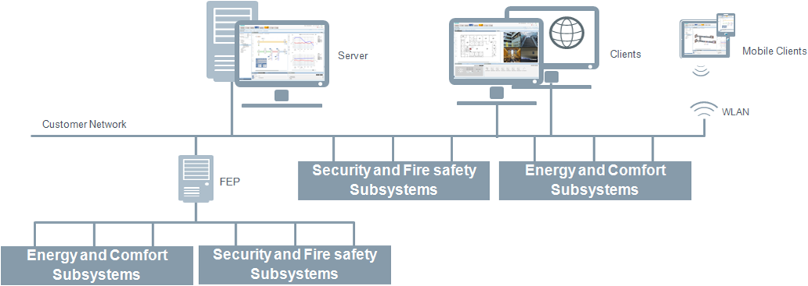
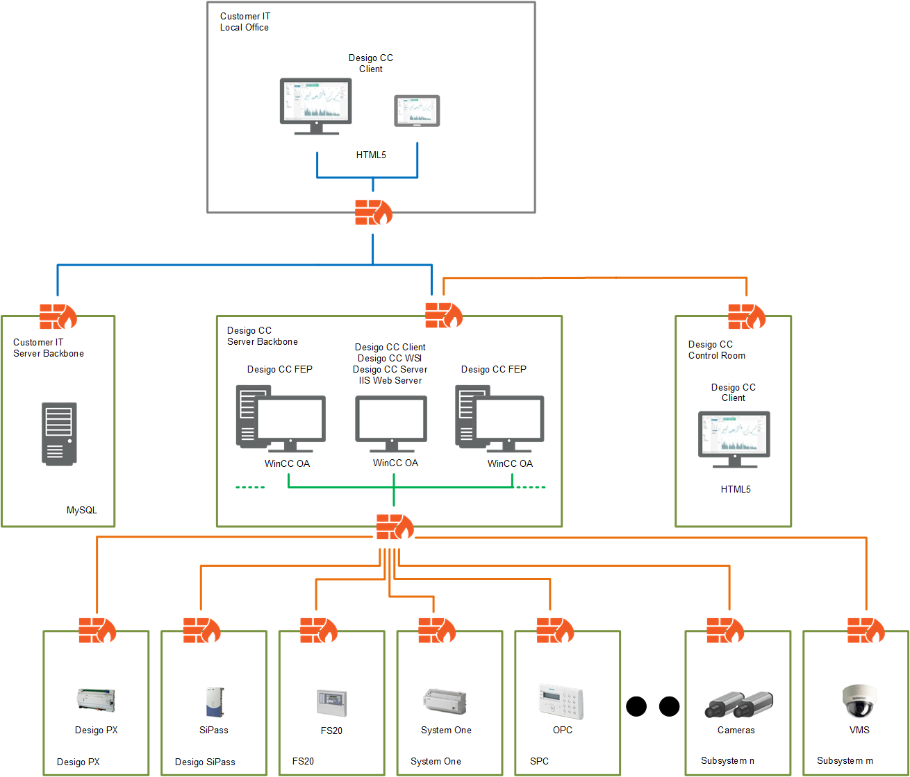

Client/Server with Local Intranet Web Server
Intended Use Case
This is the configuration choice for the cases where multiple installed clients, connected through a dedicated or shared local area network (LAN) are required.
Internet web connectivity is not required, but a local web server is installed on the Desigo CC server computer for web-based clients to connect over a company's private intranet network. Communication between the key components can be secured by standard IT security mechanisms like certificates.

Show the Deployment Diagram of Client/Server with Local Intranet Web Server

NOTE: Video streaming is not supported by Flex Client.
Security Certificates
For this client/server deployment, the following restrictions apply with respect to certificates:
- The root certificate validates the certificates used for communication. Therefore, it must be the same for all host certificates and it must be installed on the server and on all clients.
- The root and communication (host) certificates must be different and have different subject names.
- The communication certificates should be specific. Therefore, it is recommended to use different host certificates for client and server.
- The communication certificates are used by the Desigo CC client/FEP. Therefore, the logged-on user of the client/FEP operating system requires access to the private key of the host certificate stored in the Windows Certificate store.

The owner of the Desigo CC system is responsible for distributing authorized certificates and keys. This is often done by the IT infrastructure, particularly, if commercial certificates are used instead of the self-signed ones.
Settings Reference
- Websites and Web Applications.
- Setting up the Installed Client
- Setting up the Windows App Client
- Setting up the Flex Client
Configuring certificates for: Anonymous Flex Client and Identified Flex Client